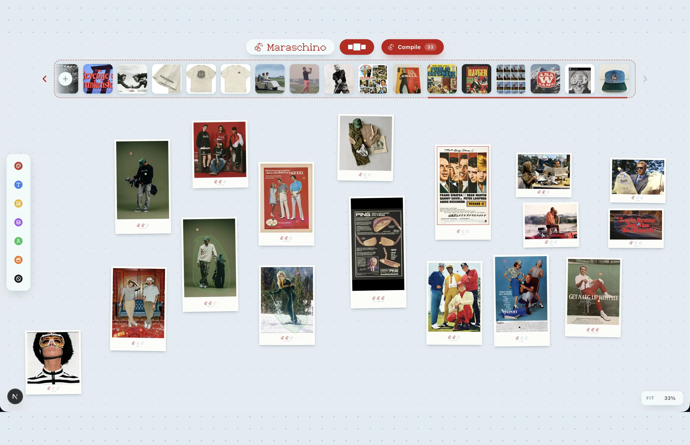

Maraschino is a web app. You drop your inspiration images onto a dot-grid board, push typed pins into the exact things you like, circle them, write a note, and rate each reference with cherries. Then you press Compile.

Reference imagery is almost always warm, so the surface is a very light slate blue with a dot grid that never hides. Every image sits in a polaroid frame: a thin white border and a deep chin. The frame gives a pin a physical edge to bite into, and the chin is where the cherries live. Pan, zoom and select work exactly like Figma, because that is the muscle memory the people I built this for already have.